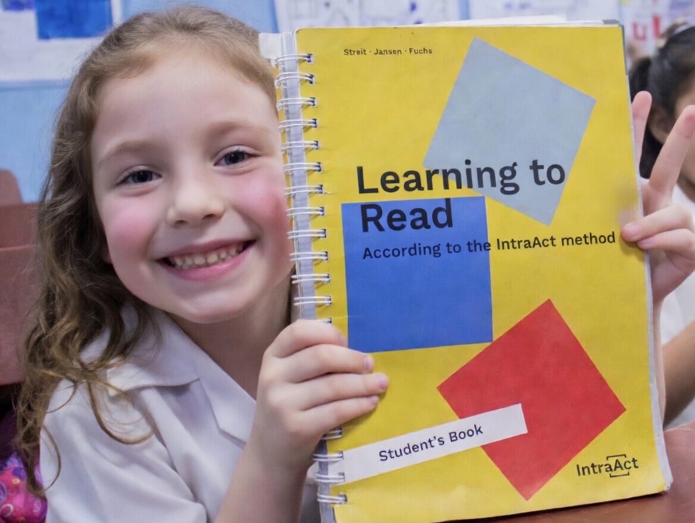

An evidence-based, Science of Reading–aligned literacy solution that enables the majority of students to reach grade-level reading proficiency within one school year.
Read Within Their Known Letter Set
Full Alphabet Fluency & Functional Literacy
Learners Globally
IntraAct is a structured, neuroscience-based literacy method grounded in the Science of Reading, designed to build automaticity in decoding, fluency, and comprehension through explicit, systematic instruction. By targeting the core components of reading development with precision and fidelity, IntraAct enables the majority of students to reach functional literacy in under eight months, establishing the strong foundations required for lifelong learning.

Grounded in the Science of Reading and decades of cognitive science and neuroscience research.
Builds automaticity in decoding as the foundation for fluency and comprehension.
Delivers structured, explicit, and systematic instruction with high fidelity.
Continuously tracks progress through fluency-based assessment to ensure every child succeeds.
IntraAct was originally developed for students with dyslexia, autism, and other learning differences.
Because of this, it is exceptionally effective for all learners.
Everyone can learn to read.
80% of students read within their known letter set—decoding simple words and sentences with accuracy.
80% of students reach full alphabet fluency and functional literacy by the end of the school year.
Per-student assessment quickly identifies level and tracks progress throughout the year.
40 minutes per day of structured reading exercises.
Reading, writing, and comprehension books with clear teaching sequences.
Continuous mastery-based assessment and advancement.
Minimal training required. Teachers are ready in hours, not days.
Designed for real classrooms with structured, ready-to-use materials.
Continuous coaching and support throughout implementation.
Partner with us to bring IntraAct to your school, after-school program, or district.